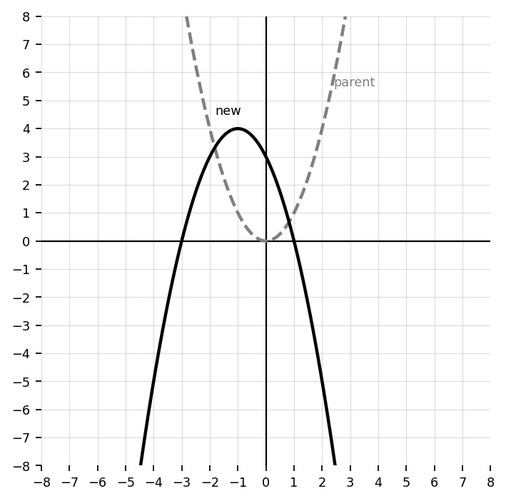
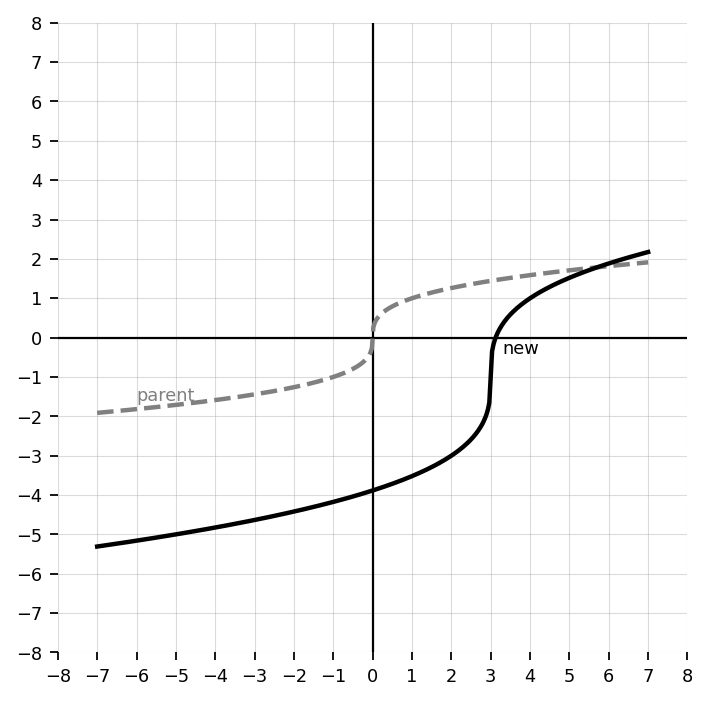
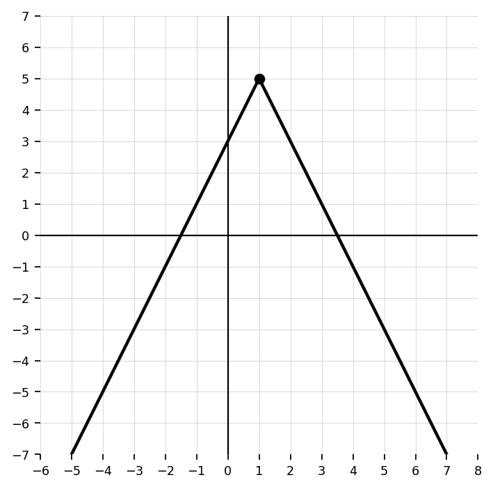
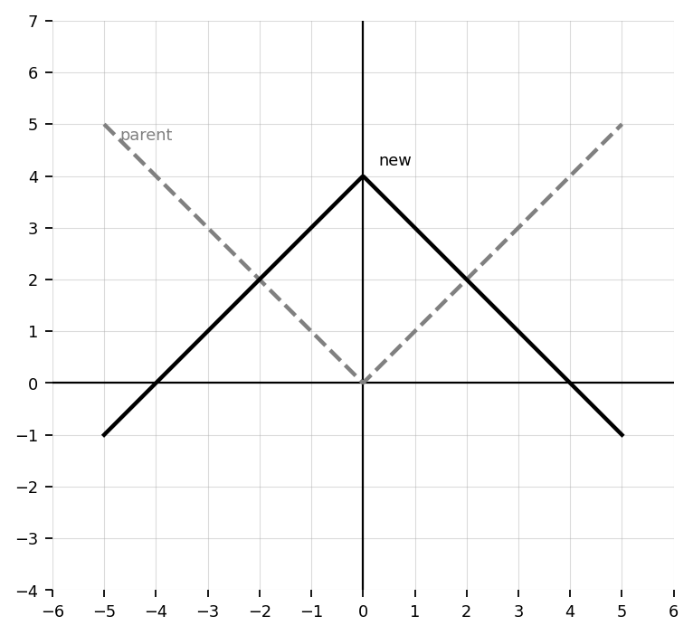
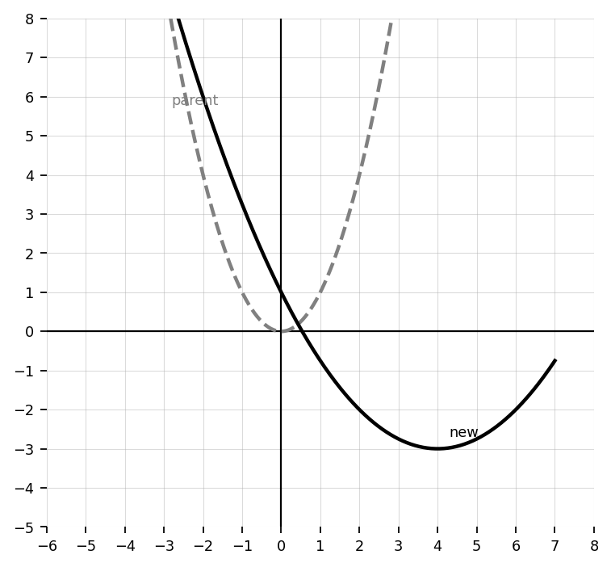
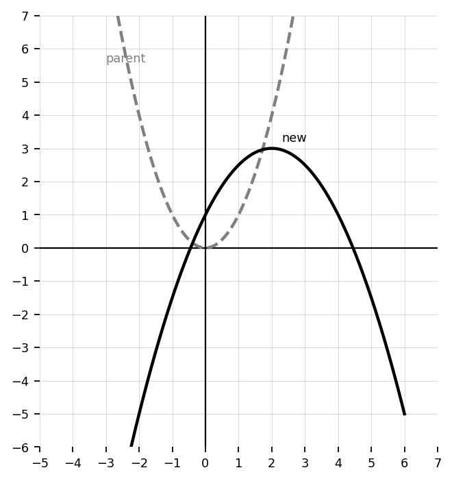
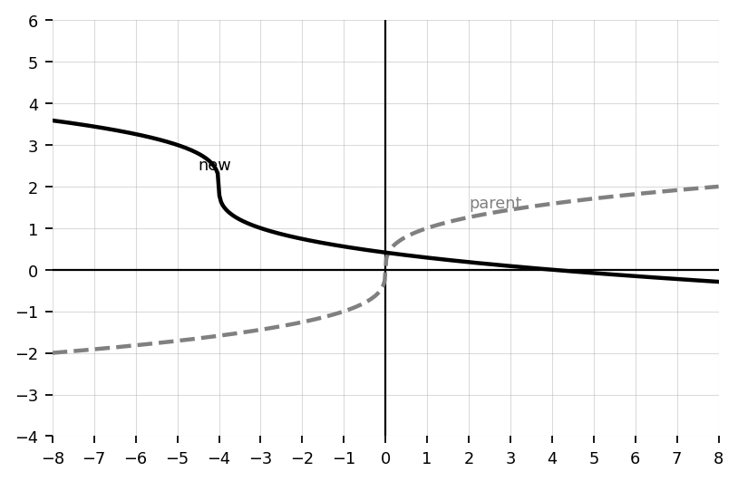
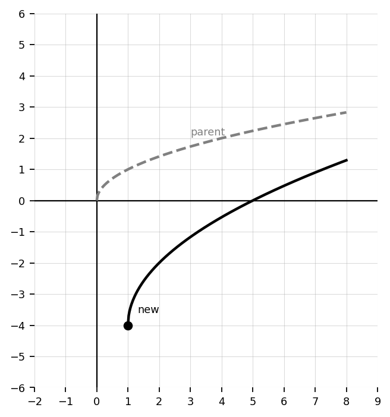
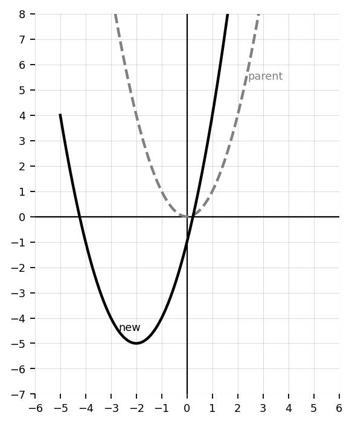

Unit 1 Section 1.4: Transformations of Parent Functions
For \(g(x)=f(x)+4\), describe the transformation from \(f(x)\) to \(g(x)\).
For \(g(x)=f(x-3)\), describe the transformation from \(f(x)\) to \(g(x)\).
For \(g(x)=-f(x)\), describe the transformation from \(f(x)\) to \(g(x)\).
For \(g(x)=2f(x)\), describe the transformation from \(f(x)\) to \(g(x)\).
Use the graph to identify the horizontal and vertical shifts from the parent function.

Use the graph to identify the reflection and shifts from the parent function.

Use the graph to identify the vertical stretch/compression and shifts from the parent function.

Use the graph to identify the parent function and describe the transformation.

Write the transformation form for “shift \(f(x)\) left 5 units and down 2 units.”
Write the transformation form for “reflect \(f(x)\) over the \(x\)-axis and shift up 6 units.”
Identify the value of \(a\), \(h\), and \(k\) in \(g(x)=-3f(x+2)-5\).
Identify the value of \(a\), \(h\), and \(k\) in \(g(x)=\frac{1}{2}f(x-4)+1\).
For \(g(x)=|x-6|+2\), identify the parent function and the transformations.
For \(g(x)=-(x+1)^2-3\), identify the parent function and the transformations.
Write an equation for the graph of \(y=x^2\) shifted right 4 units and up 1 unit.
Write an equation for the graphed quadratic transformation.

Write an equation for the graphed absolute value transformation.

Write an equation for the graphed cube root transformation.

Write an equation for the graphed square root transformation.

Compare the parent graph and transformed graph. Write the equation of the transformed graph.

Compare the parent graph and transformed graph. Write the equation of the transformed graph.

Let \(f(x)=x^2\). Write \(g(x)\) if \(f(x)\) is reflected over the \(x\)-axis, vertically stretched by a factor of 3, and shifted down 2 units.
Let \(f(x)=|x|\). Write \(g(x)\) if \(f(x)\) is shifted left 4 units and vertically compressed by a factor of \(\frac{1}{2}\).
Let \(f(x)=\sqrt{x}\). Write \(g(x)\) if \(f(x)\) is shifted right 7 units and up 3 units.
Let \(f(x)=x^3\). Write \(g(x)\) if \(f(x)\) is reflected over the \(x\)-axis and shifted left 2 units.
Describe the transformations of \(g(x)=4\sqrt{x+5}-1\) from the parent function.
Describe the transformations of \(g(x)=-\frac{1}{3}|x-2|+6\) from the parent function.
Describe the transformations of \(g(x)=2(x+3)^2-4\) from the parent function.
A student says \(g(x)=f(x-5)\) shifts the graph left 5 units because of the minus sign. Explain the error and give the correct transformation.
A student says \(g(x)=-2f(x)+3\) only shifts the graph up 3 units. Explain what transformation was missed and how it affects the graph.
Use the graph to write an equation and justify each transformation using \(a\), \(h\), and \(k\).

Use the graph to write an equation and justify each transformation using \(a\), \(h\), and \(k\).

Use the graph to write an equation and justify each transformation using \(a\), \(h\), and \(k\).

Use the graph to write an equation and justify each transformation using \(a\), \(h\), and \(k\).

Two students describe \(g(x)=3f(x+2)-4\). Student A says the graph shifts left 2, stretches vertically by 3, and shifts down 4. Student B says the graph shifts right 2, stretches vertically by 3, and shifts down 4. Who is correct? Justify your answer.
Compare \(g(x)=2f(x-1)+5\) and \(h(x)=2f(x+5)-1\). Explain how the transformations are the same and different.
Explain how the vertex or locator point helps you sketch \(g(x)=-|x-3|+2\) without making a table.
Explain how the locator point helps you sketch \(g(x)=\sqrt{x+4}-6\) without making a table.
Given that \(f(x)\) has point \((2,5)\), determine the corresponding point on \(g(x)=-2f(x-3)+1\). Explain your reasoning.
Given that \(f(x)\) has point \((-1,4)\), determine the corresponding point on \(g(x)=\frac{1}{2}f(x+2)-3\). Explain your reasoning.
Create an equation of the form \(g(x)=a|x-h|+k\) whose graph has vertex \((3,-2)\), opens downward, and is narrower than the parent function. Justify your equation.
Create an equation of the form \(g(x)=a(x-h)^2+k\) whose graph has vertex \((-4,5)\), opens upward, and is wider than the parent function. Justify your equation.
A graph is shown. Write a possible equation and explain why more than one equation might be possible if the parent function is not identified.

A graph is shown. Write a possible equation and explain how the vertex or locator point helped you choose the parent function.

A graph is shown. Write a possible equation and justify the order in which you identified the transformations.

A graph is shown. Write a possible equation and justify how the endpoint or locator point helped determine the transformation.

Create two different transformed functions using the same parent function \(f(x)\) that both have a vertical shift up 2 but different stretches or reflections. Explain how their graphs would differ.
Design a transformed function that has a key point at \((-2,7)\) and is a reflection of a parent function over the \(x\)-axis. State your parent function, write the equation, and justify your choices.